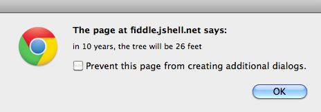

File size of a file 160x200 with 4 colors:
JavaScript gives web pages real power. It transforms a passive, static page that you can read into an active, dynamic application you can interact with, such as Gmail, Facebook, and many more.
Consequently, it's very difficult. Any first programming language is, but all programming languages bear many similarities, so learning part of one will help you immensely in learning your second.
We won't become experts in JS, but we'll learn a lot of the fundamental ideas behind all programming languages, such as:
Before we dive into learning the language, let's be inspired by some of the JavaScript Applications you'll learn to do this semester.
var price = 5.99;
var total_price = (price - discount) * (1 + tax_rate);
var item_name = "Fizzing Whizbee";
var z = (3*x+1)/2
x. (We'll learn more about dates later.)
var y = (x+5)%7;
var fname = "Harry"; var lname = 'Potter'; var name2 = "O'Malley"; // can't use single quotes here var quote = "Hermione said, 'Wingardium LeviOsa'"; // need double quotes here
var fname = "Harry"; var lname = "Potter"; var whole_name = fname+lname;
alert() function pops up a window with
some text: alert("Butterbeer costs "+price);
console.log() function writes some text
into the console, which is hidden from muggles:
console.log("Madame Rosmerta waters the butterbeer");
prompt() function pops up a box to ask
for a string and returns the string:
var pass = prompt("what is the password for Gryffindor tower?");
prompt() function can have a default value:
var pass = prompt("what is the password for Gryffindor?","caput draconis");
parseInt() function converts a string of
digits to a number:
var how_many = prompt("how many butterbeers?");
n = parseInt(how_many);
parseFloat() function does the same thing, but for non-integers:
var price = prompt("what price?","8.99");
Where can we place JavaScript code?
inline, using special tag attributes
in the document, using the <script> tag
in an external file, using the <script> tag
all of the above
How can we put comments in JavaScript code?
double slashes like this: // tricky
slash star like this: /* tricky */ tag
angle brackets like this: <!-- tricky --> tag
none of the above
What's wrong with the following code?
5.99 x 1.62 = price-with-tax
assignment in the wrong order
variable name has wrong syntax
incorrect operator used
all of the above
What's wrong with the following code?
var long_quote = "Now is the winter of our discontent made glorious summer by this son of York";
Wrong quotation marks
underscore in variable name is incorrect
line break in string literal is not allowed.
nothing; the code is fine
Explain the following code. Predict what it will do if someone types in 18
.
var age = prompt("Enter your age ");
var next = age + 1;
alert("On your next birthday, you'll be "+next);
It gets an error
It displays "18"
It displays "19"
It displays "181"
Now, run the code. Explain its behavior.
The plus sign means addition
The plus sign means concatenation
The code does the wrong thing
The code stores something in the variable age, then creates a
variable next and assigns in age+1, then
does an alert with a string and the variable next
We can use the Chrome Inspector and switch to the JavaScript console to see error messages and even type in code to try. Let's do that together. Command-option-I on a Mac will open the JavaScript Console.
Imagine we want to use JavaScript to compute the height of a tree after
some number of years after we buy it. We buy it as a sapling that is 6
feet high, and the nursery predicts that the tree will grow 2 feet per
year. This is a situation where we can use the y = mx + b
linear functions we learned in high school. For example, if the user
wants to know how tall the tree will be in 10 years, we would tell them
that the predicted height is 26 feet. (The numbers are simple enough
that you can check your code by doing the arithmetic in your head.)
prompt to ask the user for the number of years into
the future they want to know about. You'll use alert to
tell them the predicted height.

That is, it should report the input and the output, along with some nice descriptive text.
Will be posted later, visit again after .
For the quiz questions:
1. D. All of them are okay.
2. A or B but not C
3. D. All of the above
4. C. Line breaks aren't allowed.
5. D. It displays "181"
6. B. The plus sign means concatenation (in this code).
Here's the solution to the JS Fiddle activity.
var height0 = 6;
var slope = 2;
var years = prompt("how many years?");
var height = slope*years + height0;
alert("in "+years+" years, it will be "+height+" feet high");